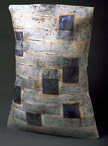
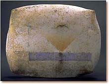
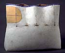

| Regina Heinz
Austrian-British sculptor.
Regina
Heinz originally trained as a painter at the academy of
fine arts in Vienna. She then studied at the School of Applied Arts
in Geneva from 1988-89 and at London Guildhall University from 1989-93.
She was awarded a Post-graduate Diploma by Goldsmith’s College,
London, in 1991 and an MA in Sculpture by the Wimbledon School of
Art in 1995. She has been a member of the * Craft Potters Association
since 1998. Regina makes hand-built, abstract sculpture, reliefs
and wall pieces decorated with colored glazes, *slips and oxides.
She cites as her inspiration the mountainous landscapes of her home
country Austria.
Artist's Statement
Regina Heinz specialises in hand built ceramic art. Exploring the
malleability of wet clay, Regina has developed a special slab building
technique to create free standing ceramic sculptures and relief
pieces for wall hanging.
Slabs
are rolled out and then "tailored": joined, pushed, folded,
stretched and incised until the piece has taken on it's final shape
and expression, yet the material has retained it's original softness
and surface texture. This technique is paramount to Regina's work
and requires spontaneity and control as the soft slabs react to
every touch and record every imprint of the hand.
Originally trained in fine arts, painting still plays an important
part in the creation process. Vibrant primary colours are applied
over a base of neutral greys and whites to enhance the underlying
form. A Lithium glaze, slips, oxides and stains are brushed on in
thin layers and multiple firings add depth and intensity to the
coloured surface.
Regina
takes her inspiration from landscapes and surface details to create
pieces that are abstract but display an organic and sensual quality,
reminiscent of the undulating "landscape" of the body.
Geometry, grid patterns and repetition are used as a starting point
and combined with organic curves, softened and transformed by the
tactile quality of clay. The forms communicate volume and inner
space and have a powerful physical presence, gently distended, containing
and being contained. They are tender abstracts of body and mind.
More
info.
More Artists of the Week
More Articles
|
{kind=link}
{kind=link}
{kind=link}